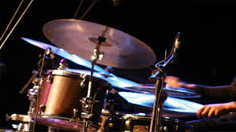

O compasso é algo fundamental para aprendizagem musical, quando se vai ler uma partitura é necessário que saibamos o compasso certo pra executar,ou no pé,na boca,ou no metrônomo. Existe uma diferença entre compasso e tempo:Compasso é a contagem de números da "pulsação" e a força que é batida,por ex.:1,2,3,4...1,2,3,4... ou 1,2,3...1,2,3... a Força se refere à batida Forte (f), meio forte (mf),fraco (p) e meio fraco (mp). Já o Tempo se relaciona à velocidade que é batida. Na partitura é chamada de "unidade de tempo" na qual se refere ao simbolos ritmicos. Um exemplo: Uma velocidade é imposta por meio do metrônomo,aumentando o bps ou bpm.
Existem 3 formas principais de compassos - Binário,ternário e quaternário. Binário é a batida de 1..2..1..2.. geralmente pra samba ou marchas.Ternário é a batida de 1,2,3...1,2,3... que costuma ser pra ritmos de valsas. Quaternário é 1,2,3,4...1,2,3,4... que são mais pra ritmos de rock n´roll. Mesmo assim, é muito variativo os gêneros e velocidades tocadas, muitas vezes podem sofrer combinações. por ex.: quaternário e ternário (7 tempos), binário e ternário (5 tempos), quaternário e binário (6 tempos),etc... uma outra forma de saber o compasso na bateria é contando no "chimbal" semelhante a imagem à cima aonde a baqueta está tocando, os estilos de ritmos são colocados em outras partes da bateria dentro de um mesmo compasso (no chimbal).
O tempo é a velocidade em bps(Batidas por segundo) ou bpm(Batidas por minuto). Isso pode ser alterado em todo o compasso e estilo ritmico, tanto no chimbal quanto também no bumbo e caixa ou tudo pode ser alterado o tempo, mas o compasso permanecer o mesmo. 60 bpm é referente à uma batida por segundo, porque 1 minuto tem 60 segundos, então cada nota seria tocada a cada segundo. Assim seria pra 120 bpm que é o dobro de 60, ou seja, 2 notas a cada 1 segundo. Um ritmo/tempo pode ser imposto quanto no instrumento de corda ou teclas como também na bateria. Vamos fazer uma suposição: um bateirista rápido poderia fazer no pedal duplo 480 bpm, referente à 8 batidas por segundo.. ou poderia ser ao dobro - 960 bpm que é referente à 16 batidas por segundo, mesmo assim as batidas no chimbal seria 1,2,3,4 na "velocidade" dos segundos, ou seja, o compasso quaternário não mudaria relacionado ao tempo muito rápido do pedal duplo. E em um piano ou solo de guitarra, podem ser tocado na mesma velocidade deste pedal duplo,sendo 480 ou 960 bpm obedecendo o compasso.